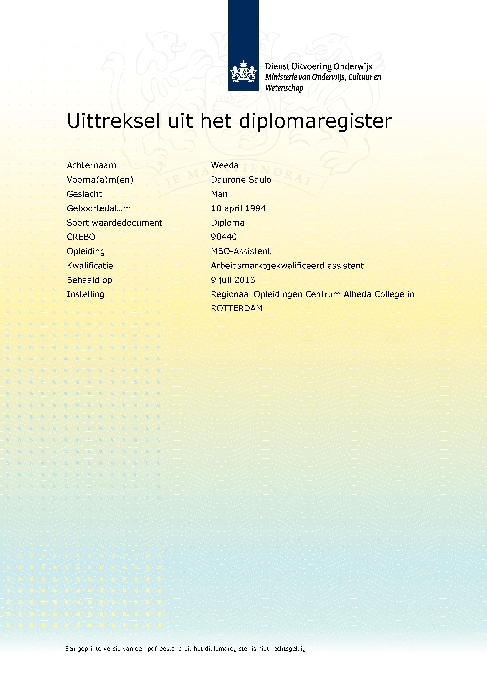

Before I started with App Development I used to do IT Management from the 2nd to the 3rd degree at the Albeda College. (see my degrees below for more info).
My 1st degree Working kwalifications assist. was the 1st degree
that I got. Getting this degree was to actually see if I would like to work in the IT.
For my 2nd Degree I studied IT Employee assistant which I Finished in 1 year instead of 2 years
For my 3rd Degree I studied Employee system Enigneering Could've done it in 1 year what the school did offer, but I didn't accept because I didn't want to miss out on the experience.
After that I worked for a Lawyer as her P.A. and Techsupport for atleast 6 months, so I could gain experience outside of school.
Right now I'm doing Webdesign and app develepment what is something very differnt to what I previously did, but so far is very exciting because you'll be learning new things everyday.